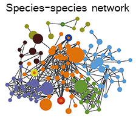

General profile of campus microbiome

The RA (relative abundance) profile for campus microbial composition of each samples was generated according to seasons (from the winter of 2015 to the spring of 2016). 110,998 unique high quality reads per sample (31,523,358 reads in total for 284 samples) were obtained after quality control. Total 541,981 OTUs were then assigned at family level. The pattern of microbial RA within each season showed comparable homogeneity. Notably, the relative abundance of some families characterized dominance in a certain season, such as Acetobacteraceae (Average RA=0.093, Autumn) generally known as acetic acid bacteria.
Seasonality of campus microbiome
Campus microbial composition showed seasonality, with typical biomarkers presenting marked cyclicity during six seasons. For example, Erwinia (LDA= 3.964, p=2.07E-19, plant pathogenic species) was the biomarker of spring, Flavobacterium (LDA= 4.681, p=3.46E-24, freshwater fish pathogen) and Acinetobacter (LDA= 4.364, p=7.80E-07, soil mineralization) were the two for summer, while Chryseobacterium (LDA=4.062, p=9.65E-14, cold tolerance) was found to indicate the duration of winter.
Species-species network was applied to reconstruct the inter-species interactions within microbial community. The integral pattern of campus microbiome did not show detectable difference among seasons.
The sample similarities (Euclidean Distance) of the microbial structure among six seasons performed seasonal alteration with fitted curve of SIN function. Interestingly, average temperature among different sampling sites also featured cyclical variation (R2=0.8236).
To further understand the potential drivers of the campus microbial seasonality, we examined the correlations between sample similarities and other climatic factors including humidity, UV intensity and barometric pressure. Similarly, average UV intensity at Wuhan area showed seasonality, but comparable positive correlation to sample similarities (R2=0.115) owing to the phase shift.
And barometric pressure presented obvious cyclicality through seasons, negatively correlated to sample similarities (R2=0.666 ).

However, there was no obvious cyclicality behavior of average humidity in the area, and the correlation between humidity and sample distance over seasons was weak.
Campus microbiome exerts independent stability
The dispersal influence of human activities on microbial community in residences has been reported at city-scale[21], and the effect at campus scale was explored in this study. In HUST, roads connecting CCDL (Classroom, Canteen, Dorm and Library) accommodates a routinely large flux of students, while other roads feature lower (Roads contacting hills and lakes ) or non-routine (Roads contacting Clinics, Gates, Hotel, Bus Station, Sports Fields) human density which offered us a unique model for analysis.
The PCA analysis of the microbial composition did not show integral distinction among CCDL, hill and lake (R2=0.129 , p=0.001 ). However, the compositional difference was detectable between lakes and hills, the principle compositions of which overlapped with partial distribution of CCDL’s respectively. The gradual shift of microbial composition seemingly explained the dispersal influence of human activities on campus mirobiome, since lakes were in the vicinity of CCDL comparing to hills.
Human activities influence campus microbiome
Campus microbiome performed stability against outer stress. School gates and hotels were regarded as interface between inside and outside of campus, harboring disturbances from the exchanges of people, vehicles and goods. PCA analysis demonstrated no taxonomic difference between school hotel or gate and others, as the inner taxonomic difference of ‘others’ was more distinguished. As to functional composition, the primary composition of the two comparisons showed coherent convergence.
Then we focused on contrasting the taxonomic and functional compositions of CCDL to those of gate or hotel. After curtailing sample range from all other sites (except for school gate and hotels) to CCDL, we noticed a more compressed and congruent distribution of microbial between CCDL and hotel or gate. The functional analysis of the two comparisons still showed no significant difference, which reconfirmed the robustness of campus microbiome. Moreover, these results corroborated our former statement in a cogent way that intensive human activities had dispersal influence on campus microbiome structure, since the common feature among CCDL, school gates and hotels was high human density and populational mobility.
A concordant pattern of microbial compositions among Samples from CCNU (Central China Normal University), HAU (Huazhong Agriculture University), WHU (Wuhan University) and HUST was also revealed, except for samples from HUST, which featured more sporadic distribution taxonomic composition (Figure 4(E)). And the consistence of functional composition among the four universities was even higher (Figure 4(J)), comparing to the one of taxonomic composition. The consistence tended to go with the endemic feature of campus in Wuhan. Located in Wuhan, intersected by a network of rivers and hills, the four universities had the similar landscape distribution within campus: artificial or nature lakes, small hills and extended vegetation coverage as well as the arrangement of typical campus buildings (Figure X(A)). Besides the above geological and social characters, concurrent seasonal climate factors (eg: temperature and humidity) and routine fluxes of population added up to the taxonomic and functional consistence among the four universities.

Multiple effectors of the functional microbial structure
Campus microbiome is exposed to time dimensions, human effects and environmental stresses (eg. temperature), as a relatively enclosed community. We examined the ESs (effect size) of these potential drivers (Figure 5(A)) on the microbial structure and function. Human effects (ES=0.167) and temperature (ES= 0.176) contributed approximately to microbial structure, while season exerted less contribution (ES= 0.097, Figure 5(B)). As for microbial functions, similarly, the influences of human effects (ES=0.139) and temperature (ES=0.130) were stronger than that of season (ES=0.096, Figure 5(C)).